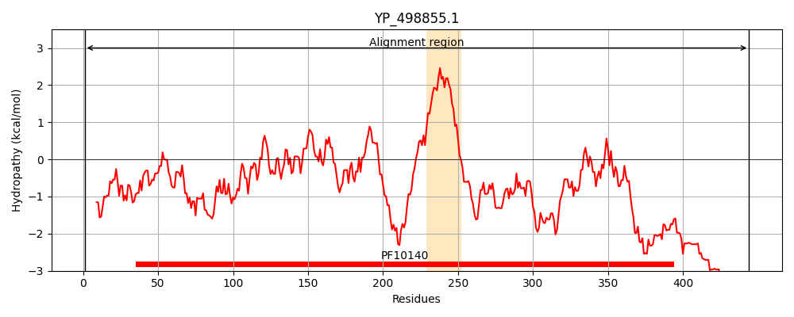

Hit Accession: Q99WU0
Hit TCID: 3.A.7.17.1
Hit Description: gnl|BL_ORD_ID|17684 gnl|TC-DB|Q99WU0|3.A.7.17.1 Protein essB - Staphylococcus aureus (strain Mu50 / ATCC 700699).
Mach Len: 444
e:0.000000
Query TMS Count : 1
Hit TMS Count: 1
TMS-Overlap Score: 1.200000
Predicted Substrates:CHEBI:36080;protein, CHEBI:36080;protein
BLAST Alignment:
Score: 2294 , Bit scores: 888 bits, E-value: 0.0e+00, Alignment length: 444, Percentage identity: 100
Query: 1 MVKNHNPKNEMQDMLTPLDAEEAAKTKLRLDMREIPKSSIKPEHFHLMYLLEQHSPYFIDAELTELRDSFQIHYDINDNHTPFDNIKSFTKNEKLRYLLNIKNLEEVNRTRYTFVLAPDELFFTRDGLPIAKTRGLQNVVDPLPVSEAEFLTRYKALVICAFNEKQSFDALVEGNLELHKGTPFETKVIEAATLDLLTAFLDEQYQKQEQDYSQNYAYVRKVGHTVFKWVAIGMTTLSVLLIAFLAFLYFSVMKHNERIEKGYQAFVKDDYTQVLNTYDDLDGKKLDKEALYIYAKSYIQTNKQGLEKDKKENLLNNVTPNSNKDYLLYWMELGQGHLDEAINIATYLDDNDITKLALINKLNEIKNNGDLSNDKRSEETKKYNDKLQDILDKEKQVKDEKAKSEEEKAKAKDEKLKQQEENEKKQKEQAQKDKEKRQEAERKK 444
MVKNHNPKNEMQDMLTPLDAEEAAKTKLRLDMREIPKSSIKPEHFHLMYLLEQHSPYFIDAELTELRDSFQIHYDINDNHTPFDNIKSFTKNEKLRYLLNIKNLEEVNRTRYTFVLAPDELFFTRDGLPIAKTRGLQNVVDPLPVSEAEFLTRYKALVICAFNEKQSFDALVEGNLELHKGTPFETKVIEAATLDLLTAFLDEQYQKQEQDYSQNYAYVRKVGHTVFKWVAIGMTTLSVLLIAFLAFLYFSVMKHNERIEKGYQAFVKDDYTQVLNTYDDLDGKKLDKEALYIYAKSYIQTNKQGLEKDKKENLLNNVTPNSNKDYLLYWMELGQGHLDEAINIATYLDDNDITKLALINKLNEIKNNGDLSNDKRSEETKKYNDKLQDILDKEKQVKDEKAKSEEEKAKAKDEKLKQQEENEKKQKEQAQKDKEKRQEAERKK
Sbjct: 1 MVKNHNPKNEMQDMLTPLDAEEAAKTKLRLDMREIPKSSIKPEHFHLMYLLEQHSPYFIDAELTELRDSFQIHYDINDNHTPFDNIKSFTKNEKLRYLLNIKNLEEVNRTRYTFVLAPDELFFTRDGLPIAKTRGLQNVVDPLPVSEAEFLTRYKALVICAFNEKQSFDALVEGNLELHKGTPFETKVIEAATLDLLTAFLDEQYQKQEQDYSQNYAYVRKVGHTVFKWVAIGMTTLSVLLIAFLAFLYFSVMKHNERIEKGYQAFVKDDYTQVLNTYDDLDGKKLDKEALYIYAKSYIQTNKQGLEKDKKENLLNNVTPNSNKDYLLYWMELGQGHLDEAINIATYLDDNDITKLALINKLNEIKNNGDLSNDKRSEETKKYNDKLQDILDKEKQVKDEKAKSEEEKAKAKDEKLKQQEENEKKQKEQAQKDKEKRQEAERKK 444 | Protein Hydropathy Plots: |
|---|
|  | |
Pairwise Alignment-Hydropathy Plot:
|
|---|
|